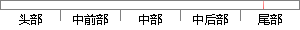

在需要编辑的问卷的操作列中点击编辑问卷按钮，对问卷进行编辑修改。
片段位置图

相似结果|
相似片段 1：此步操作也可通过点击菜单栏里的问卷列表后点击 按钮进入。（九）问卷页面的二次编辑1、已编辑完成的问卷页面可进行二次编辑，在 file 文件夹里找到需要编辑的问卷，使用HTML 编辑进行编辑，确保问卷
相似片段 2：显示出来，方便用户进行查询。4.4 问卷编辑题型选择窗体该窗体主要是对编辑问卷中各种题型做一个提纲，在此窗体中点击编辑按钮，就可以进入问卷内容框中所选择的题型的编辑窗体。同样，点击修改按钮则可进入问卷框中
相似片段 3：，系统页面会弹出对应问题类型模板，填写好对应区域内容点击完成编辑按钮即可。以上问卷类任务修改功能的核心思想是利用表单提交数据给 PHP脚本，根据对应 id号进行修改保存。实现的过程要给用户流畅简洁的体验感
相似片段 4：，此题就会保存下来，否则当在题型选择窗口中点击取消时，此题就被删除掉。48图 4-9 问答题编辑窗体视图4.7 修改说明性文字的窗体该窗体用来修改当前问卷中的说明性文字，点击查阅按钮，则数据库中所暂时
相似片段 5：，点击您需要设置的题目进入添加题目的选项页 。此步操作也可通过点击菜单栏里的题目列表点击 按钮进入。（八）编辑问卷页面此操作为不可逆操作，请确定问卷题目已设置完成，题目选项已添加完成后，才能编辑问卷页面
相似片段 6：。所以必须点击两次相应的编辑按钮才会刷新出正确的结果。当一个问卷的编辑模块显示出来之后，我们就可以对其中包含的题目进行添加和删除操作。每种题型(单选、多选、问答)的添加删除方法都是类似的，这里以单选为
相似片段 7：】 走访情况汇总相 保存成功。刷新走访按钮，在修改界面 关信息后，点击 情况汇总列表。上编辑走访情况 【保存】能保存汇总信息，然后点 成功。击【保存】按钮。5．问卷表管理问卷表管理模块主要是系统管理员
|
※ 片段修改建议 ※
近似词参考：- 需要：必要
- 编辑：编纂
- 操作：操纵
- 编辑：编纂
- 进行：举行
- 编辑：编纂
- 修改：点窜
系统自动生成语句： 在必要编纂的问卷的操纵列中点击编纂问卷按钮，对问卷举行编纂点窜。
注：本片段修改建议为系统自动生成，仅供参考。